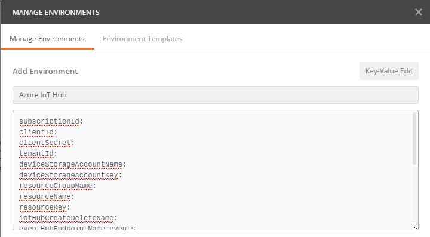

I was recently working with a partner that was having some difficulty integrating with the Azure IoT REST APIs. You can read about that experience here: How to Use the Azure IoT Hub Device Twins REST APIs with Postman and Newman. Since then, I’ve really been turned on to the idea that Postman and Newman are excellent tools for communicating proper REST API usage to customers and not just a REST execution utility. Not only does it show you everything you need to execute the calls, it actually provides you with a mechanism to execute them from within Postman App or on the server via Newman. You, as an API creator, want to limit the amount of friction your customers have to go through to use your APIs. Especially with APIs that require authentication or SAS/SigV4 token generation code, like Azure and AWS do.
I think there is great value in being able to point your customers to a Postman Collection URL that allows them to quickly execute all of your APIs and start using them with very little ramp up.
Click the following “Run with Postman” image if you want to skip right to the Azure IoT REST APIs Postman Collection
From my experience with Azure IoT Device Twin REST APIs, I thought it would be great to do the same thing for the entire Azure IoT REST API surface. I’m a huge fan of starting small and showing incremental progress, so with this post, I’m going to show you how I got the entire Azure IoT Resource Provider REST API surface working in Postman and Newman. The Resource Provider REST APIs allow you to manage IoT Hubs as an Azure Resource via the Azure Resource Manager APIs. The official Swagger for the Resource Provider APIs can be found here: Azure IoT Hub Resource Provider Swagger.
I’ve written this blog post with two audiences in mind:
1. View Only: You want to learn how to use the Azure IoT Resource Provider REST APIs but don’t want to setup all the Azure resources required to execute the requests.
See Option 1: View Requests Only below.
2. View and Execute: You want to learn how to use the APIs and execute them against your Azure Subscription.
See Option 2: View and Execute Requests below.
Install Postman
With either approach below, you will need to install Postman, which you can do here: Install Postman. I use the Desktop version, but the Chrome version should work fine as well.
Option 1: View Requests Only
If all you want to do is view the requests in Postman without executing anything, then jump to the Open Postman Collection section below.
Option 2: View and Execute Requests
If you want to view the requests and execute them against your Azure Subscription, then you will need to do the following.
Set Postman Environment Variables
Postman allows you to setup variables and allows you to group them by “Environment”. For this exercise, you will create a new Environment and add the required variables.
1. In Postman, click the Manage Environments option under the gears icon in the upper right.
2. Click Add, then Click Bulk Edit
3. Paste the following into the textbox:
4. Give it a name like “Azure IoT Hub”

5. We will now work on creating Azure resources and getting all of the variables needed to execute the Postman collection.

Setup Azure Resources
1. Create Azure Subscription
You will likely already have an Azure Subscription, but if you don’t, you can create one in the Azure Portal.
Whether you just created an Azure Subscription or are using an existing one, you will need your Subscription Id to execute these REST API calls.
Copy your Subscription Id, which is a GUID, to the subscriptionId Postman Environment variable.
2. Create Azure Active Directory (AAD) App
You will need an AAD app to call any of the Resource Provider REST APIs. Please follow this blog post to create your AAD app: How to Use Azure Active Directory (AAD) Access Tokens in Postman.
When you come back to this post, you will have the following variables.
- clientId
- clientSecret
- tenantId
Copy these variables into the corresponding Postman Environment variables.
If you do not have those 3 things, then please go back to the above blog post to get them.
3. Create Azure Blob Storage Account
You will need an Azure Blob Storage Account to use the Device Bulk Export, Import, Update and Delete REST APIs.
You can skip this step if you don’t need to test Device Bulk operations, but just keep in mind that those requests will fail.
1. Create the Blob Storage Account, feel free to use Azure Storage Explorer to do so.
2. Create two containers, one called ‘export’ and one called ‘import’.
This is what your Blob Account will look like when you are done with this step:

Find your account name and key:

When you are done with this step, you will have the following:
- deviceStorageAccountName
- deviceStorageAccountKey
Copy these variables into the corresponding Postman Environment variables.
4. Create IoT Hub
You will likely already have an IoT Hub, but in case you don’t please go to the Azure Portal and create one.
When you are done with this step, you will have the following variables.
- resourceGroupName - the name of the Resource Group that your IoT Hub belongs to
- resourceName - the name of your IoT Hub
- resourceKey - the Primary key for iotowner policy
Copy these variables into the corresponding Postman Environment variables.
Choose an IoT Hub name to create and delete.
The only other remaining required variable is “iotHubCreateDeleteName”. I made this a seperate variable so people don’t inadvertently delete an IoT Hub. You can set this variable to whatever you want, but it has to be unique.
Open Postman Collection
Postman provides the ability for you to share a Postman collection via URL and a “Run in Postman” button that you can embed in your documentation.
If you’d like to open the entire Azure IoT Postman collection, then click on the “Run in Postman” button below. It will open Postman, where you can execute each request or just have a look around.
When you open the collection you will see the following:

Feel free to poke around and drill into whatever API you’d like to or execute them if you have done the setup steps above.
Run Postman Collection
1. Select the Environment that you create earlier, you may have called it Azure IoT Hub

2. Click the ‘Run’ Button

This will load the Postman Collection Runner window.

3. Click ‘Start Test’
You will immediately start to see the request results

With the current configuration, the tests will take a while to execute because I am running the “Create IoT Hub” request and the “Verify IoT Hub” request, which is a polling request that returns a “Success” code when the IoT Hub is created.
Run Postman Collection via Newman
Newman is a Postman Collection runner CLI. With Newman, you can run Postman collections as part of your continuous integration suite.
For example, the following will execute a Postman Collection with a given set of Environment variables.
newman run postman-collection.json -e environment-variables.json
Here’s how to run the Azure IoT Hub collection with Newman.
0. Install Newman
npm i -g newman
1. Export the Postman Collection


2. Export the Environment Variables
Click the gear icon in the upper right hand corner of Postman and select Manage Environments and then click the Download Environment button.


3. Open a CMD and execute the following command:
newman run "Azure IoT Hub.postman_collection.json" -e "Azure IoT Hub.postman_environment.json"
You will see the following when the run completes
There’s a chance you will get errors when running these, especially the Export/Import Device requests. I’m following up with the Azure IoT team on this. If you do run into this issue, just run again or try again after some time.
Setup Postman Monitor
I haven’t tried this yet, but Postman offers a PRO feature called “Monitor”, which allows you to schedule the Collection Run. I am more interested in integration with existing continuous integration software, which I will be exploring very soon.
In the meantime, checkout their post Integrating automated API tests with Jenkins.
Jon